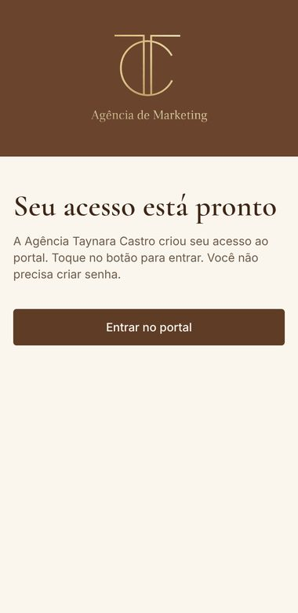
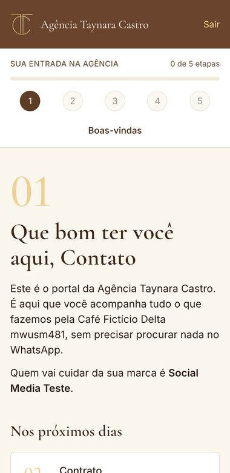
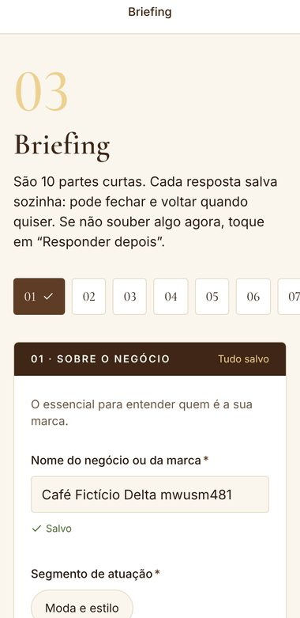
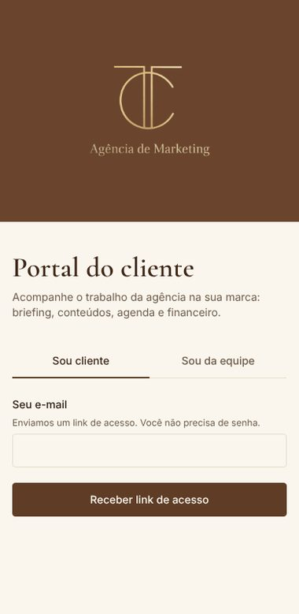
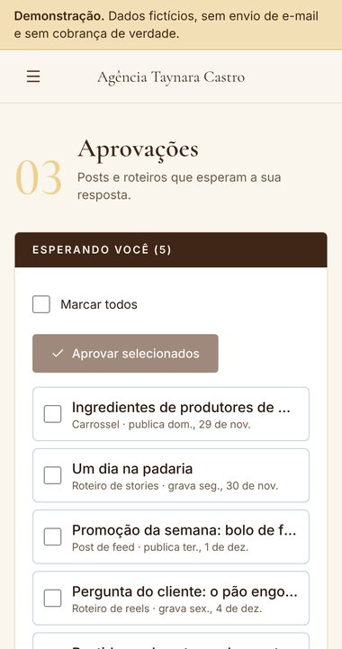
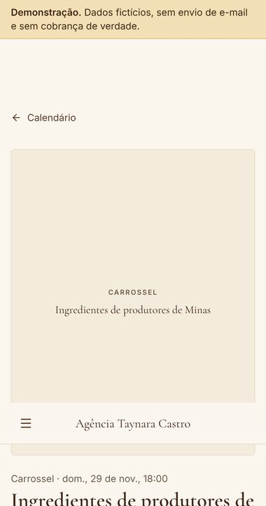
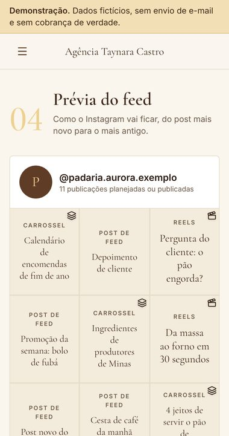
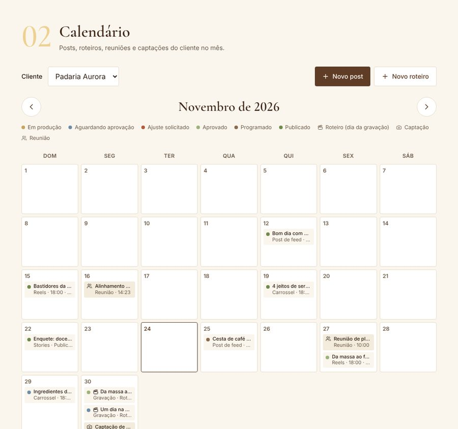
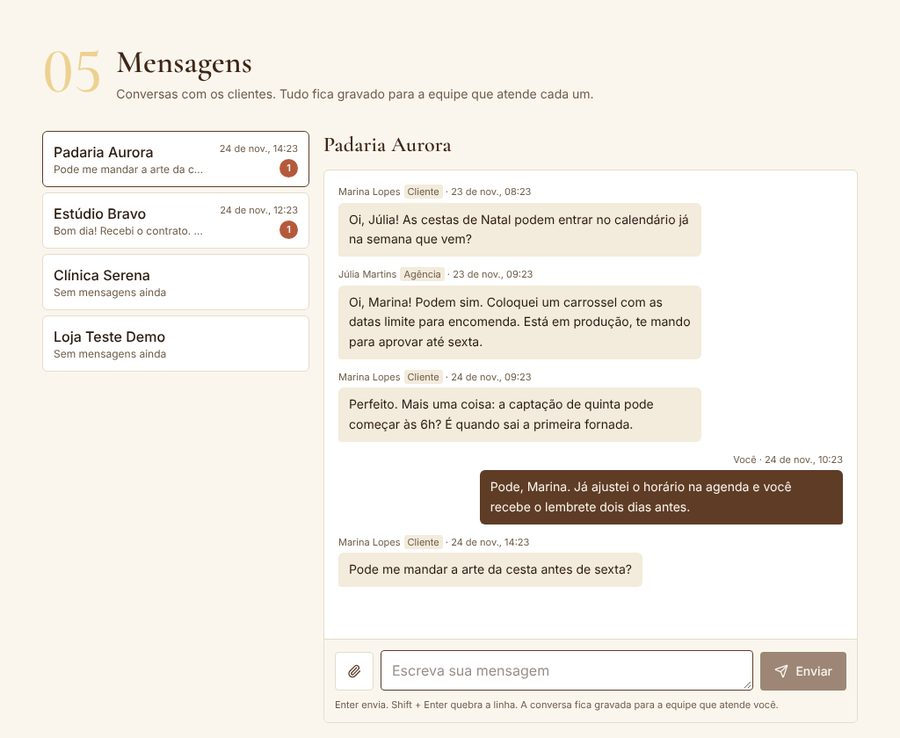

<title>Guia do Portal do Cliente</title>
<meta name="claude:viewport-fit-sides" content="cover">
<link rel="preconnect" href="https://fonts.googleapis.com">
<link rel="preconnect" href="https://fonts.gstatic.com" crossorigin>
<link rel="stylesheet" href="https://fonts.googleapis.com/css2?family=Cormorant+Garamond:wght@500;600;700&family=Inter:wght@400;500;600&display=swap">
<style>
  /* Documento em folhas A4 sobre fundo creme. Cada .pagina vira uma página do PDF. */
  :root {
    --creme: #f7f3ea;
    --folha: #fffdf8;
    --tinta: #1c1a17;
    --preto: #141311;
    --suave: #5e574c;
    --linha: #e4dccd;
    --numero: #e6ddcb;
    --oliva: #5f7a3c;
    --ouro: #c9a45f;
    --titulo: "Cormorant Garamond", Georgia, "Times New Roman", serif;
    --texto: "Inter", system-ui, -apple-system, "Segoe UI", sans-serif;
    color-scheme: light;
  }
  * { box-sizing: border-box; }
  body {
    background: var(--creme);
    color: var(--tinta);
    font-family: var(--texto);
    font-size: 15px;
    line-height: 1.55;
    padding-block: 32px 64px;
    padding-left: max(16px, env(safe-area-inset-left, 0px));
    padding-right: max(16px, env(safe-area-inset-right, 0px));
  }
  .documento { display: flex; flex-direction: column; align-items: center; gap: 28px; }
  .pagina {
    width: 100%;
    max-width: 794px;
    background: var(--folha);
    border: 1px solid var(--linha);
    padding: 56px 56px 48px;
    display: flex;
    flex-direction: column;
    gap: 20px;
    position: relative;
  }
  .rodape {
    margin-top: auto;
    padding-top: 16px;
    border-top: 1px solid var(--linha);
    display: flex;
    justify-content: space-between;
    gap: 12px;
    font-size: 11px;
    color: var(--suave);
    letter-spacing: 0.04em;
  }

  h1, h2, h3 { font-family: var(--titulo); color: var(--preto); font-weight: 600; margin: 0; text-wrap: balance; font-variant-numeric: lining-nums; }
  h2 { font-size: 34px; line-height: 1.1; }
  h3 { font-size: 22px; line-height: 1.2; }
  p { margin: 0; max-width: 64ch; }
  ul, ol { margin: 0; padding-left: 20px; display: flex; flex-direction: column; gap: 6px; }
  strong { font-weight: 600; color: var(--preto); }
  .mudo { color: var(--suave); }
  .pequeno { font-size: 13px; }

  .cabeca { display: flex; align-items: flex-end; gap: 18px; }
  .num {
    font-family: var(--titulo);
    font-weight: 500;
    font-size: 96px;
    line-height: 0.78;
    color: var(--numero);
    font-variant-numeric: lining-nums;
    flex-shrink: 0;
  }
  .rotulo { font-size: 11px; font-weight: 600; letter-spacing: 0.14em; text-transform: uppercase; color: var(--suave); }

  /* Cartões com cabeçalho preto */
  .cartao { border: 1px solid var(--linha); background: #fff; min-width: 0; display: flex; flex-direction: column; }
  .cartao > header {
    background: var(--preto);
    color: var(--creme);
    padding: 10px 16px;
    font-size: 11px;
    font-weight: 600;
    letter-spacing: 0.14em;
    text-transform: uppercase;
  }
  .cartao > div { padding: 14px 16px; display: flex; flex-direction: column; gap: 8px; font-size: 13.5px; }
  .grade-3 { display: grid; grid-template-columns: repeat(3, minmax(0, 1fr)); gap: 14px; }
  .grade-2 { display: grid; grid-template-columns: repeat(2, minmax(0, 1fr)); gap: 14px; }

  /* Capa */
  .capa { padding: 0; overflow: hidden; }
  .capa .faixa { background: var(--preto); display: flex; justify-content: center; padding: 72px 24px 64px; }
  .capa .faixa img { width: 260px; height: auto; }
  .capa .corpo { padding: 48px 56px 0; display: flex; flex-direction: column; gap: 18px; }
  .capa h1 { font-size: 58px; line-height: 1; }
  .capa .sub { font-size: 19px; color: var(--suave); max-width: 40ch; }
  .capa .rodape { margin: auto 56px 48px; }
  .ficha-capa { display: grid; grid-template-columns: repeat(3, minmax(0, 1fr)); gap: 0; border: 1px solid var(--linha); margin-top: 10px; }
  .ficha-capa > div { padding: 14px 16px; border-right: 1px solid var(--linha); display: flex; flex-direction: column; gap: 4px; }
  .ficha-capa > div:last-child { border-right: 0; }
  .ficha-capa b { font-family: var(--titulo); font-size: 24px; font-weight: 600; color: var(--preto); font-variant-numeric: lining-nums; }

  /* Passo a passo */
  .passos { list-style: none; padding: 0; gap: 0; counter-reset: passo; }
  .passos li { display: grid; grid-template-columns: 52px minmax(0, 1fr); gap: 14px; padding: 11px 0; border-bottom: 1px solid var(--linha); }
  .passos li:last-child { border-bottom: 0; }
  .passos li::before {
    counter-increment: passo;
    content: counter(passo, decimal-leading-zero);
    font-family: var(--titulo);
    font-size: 30px;
    line-height: 1;
    color: var(--numero);
    font-weight: 600;
    font-variant-numeric: lining-nums;
  }
  .passos b { display: block; font-weight: 600; color: var(--preto); }
  .passos span { font-size: 13.5px; color: var(--suave); }

  /* Telas */
  .telas { display: grid; grid-template-columns: repeat(4, minmax(0, 1fr)); gap: 12px; }
  .telas-3 { display: grid; grid-template-columns: repeat(3, minmax(0, 1fr)); gap: 12px; }
  .funcoes { display: grid; grid-template-columns: minmax(0, 1fr) minmax(0, 1fr); gap: 10px 18px; }
  .funcoes div { border-top: 1px solid var(--linha); padding-top: 8px; }
  .funcoes b { display: block; font-weight: 600; color: var(--preto); font-size: 13.5px; }
  .funcoes span { font-size: 12.5px; color: var(--suave); }
  .tela { margin: 0; display: flex; flex-direction: column; gap: 6px; min-width: 0; }
  .tela img { width: 100%; height: auto; border: 1px solid var(--linha); display: block; }
  .tela figcaption { font-size: 11.5px; color: var(--suave); line-height: 1.35; }
  .tela-larga img { width: 100%; height: auto; border: 1px solid var(--linha); display: block; }

  /* Tabelas */
  .tabela { overflow-x: auto; }
  table { width: 100%; border-collapse: collapse; font-size: 13px; }
  th { text-align: left; font-size: 10.5px; letter-spacing: 0.12em; text-transform: uppercase; color: var(--creme); background: var(--preto); padding: 8px 10px; font-weight: 600; }
  td { padding: 8px 10px; border-bottom: 1px solid var(--linha); vertical-align: top; }
  .ponto { display: inline-block; width: 12px; height: 12px; border-radius: 2px; vertical-align: -1px; margin-right: 8px; border: 1px solid rgba(0,0,0,.15); }
  .selo { display: inline-block; font-size: 11px; font-weight: 600; padding: 2px 8px; border: 1px solid var(--linha); white-space: nowrap; }
  .selo.pronto { background: #eef2e6; border-color: #b9c79f; color: #3d5222; }
  .selo.proxima { background: #f6efe0; border-color: #e0cfa8; color: #6a5420; }
  .selo.depois { background: #f3f1ec; color: var(--suave); }

  .aviso { border-left: 3px solid var(--preto); background: #f4efe4; padding: 12px 16px; font-size: 13.5px; }
  .check { list-style: none; padding: 0; gap: 8px; }
  .check li { display: grid; grid-template-columns: 18px minmax(0, 1fr); gap: 10px; font-size: 13.5px; }
  .check li::before { content: ""; width: 14px; height: 14px; border: 1.5px solid var(--preto); margin-top: 3px; }

  dl { margin: 0; display: grid; grid-template-columns: minmax(0, 1fr); gap: 10px; }
  dt { font-weight: 600; color: var(--preto); font-size: 13.5px; }
  dd { margin: 2px 0 0; font-size: 13.5px; color: var(--suave); }

  /* Celular */
  @media (max-width: 700px) {
    .pagina { padding: 32px 20px 28px; }
    .capa .corpo { padding: 32px 20px 0; }
    .capa .rodape { margin: auto 20px 28px; }
    .capa h1 { font-size: 42px; }
    .num { font-size: 64px; }
    h2 { font-size: 28px; }
    .grade-3, .grade-2, .ficha-capa { grid-template-columns: minmax(0, 1fr); }
    .ficha-capa > div { border-right: 0; border-bottom: 1px solid var(--linha); }
    .telas, .telas-3 { grid-template-columns: repeat(2, minmax(0, 1fr)); }
    .funcoes { grid-template-columns: minmax(0, 1fr); }
  }

  /* Modo PDF: folhas A4 exatas (794 x 1123 px a 96 dpi) */
  html.pdf body { padding: 0; background: var(--folha); }
  html.pdf .documento { gap: 0; }
  html.pdf .pagina { width: 794px; max-width: none; height: 1123px; border: 0; overflow: hidden; }
</style>

<main class="documento">

  <!-- CAPA -->
  <section class="pagina capa" aria-label="Capa">
    <div class="faixa"></div>
    <div class="corpo">
      <p class="rotulo">Guia do portal</p>
      <h1>Portal do Cliente</h1>
      <p class="sub">O que foi criado, como cada pessoa usa e o que ainda falta para ir para o ar.</p>
      <div class="ficha-capa">
        <div><span class="rotulo">Para</span><b>Agência Taynara Castro</b></div>
        <div><span class="rotulo">Situação</span><b>Demonstração no ar</b></div>
        <div><span class="rotulo">Data</span><b>Novembro de 2026</b></div>
      </div>
      <p class="mudo pequeno">Demonstração: portal-cliente-tc-demo.netlify.app</p>
    </div>
    <div class="rodape"><span>Portal do Cliente</span><span>Documento para leitura, sem termos técnicos</span></div>
  </section>

  <!-- 01 O QUE É -->
  <section class="pagina" aria-labelledby="t1">
    <div class="cabeca"><span class="num" aria-hidden="true">01</span><h2 id="t1">O que é o portal</h2></div>
    <p>É um site próprio da agência onde cada cliente acompanha, em tempo real, tudo o que está sendo feito pela marca dele. Ele entra pelo celular ou pelo computador, sem instalar nada.</p>
    <p>O que hoje fica espalhado entre WhatsApp, e-mail e planilhas passa a ter um lugar só: contrato, briefing, calendário de posts, roteiros, aprovações, conversa com a agência, estratégia do mês, documentos e financeiro.</p>
    <div class="grade-2">
      <div class="cartao"><header>Para o cliente</header><div>
        <ul>
          <li>Vê no calendário o que vai ser postado e gravado.</li>
          <li>Aprova ou pede ajuste em cada post com um toque.</li>
          <li>Fala com a agência pelo chat, sem perder nada no WhatsApp.</li>
          <li>Encontra contrato, manual e mensalidades num lugar só.</li>
        </ul>
      </div></div>
      <div class="cartao"><header>Para a agência</header><div>
        <ul>
          <li>Todas as conversas ficam gravadas para a equipe.</li>
          <li>Sabe o que está com o cliente e o que voltou com ajuste.</li>
          <li>Tem histórico de quem aprovou o quê e quando.</li>
          <li>Acompanha a entrada de cada cliente novo, etapa por etapa.</li>
        </ul>
      </div></div>
    </div>
    <h3>Pensado para ser vendido</h3>
    <p>O portal nasce como ferramenta da Agência Taynara Castro, mas foi construído para receber outras agências e social medias. Cada agência fica separada das outras, com a própria logo, as próprias cores e os próprios clientes. Uma agência nunca enxerga os dados de outra.</p>
    <div class="aviso"><strong>Sobre a demonstração.</strong> O endereço da capa já funciona, com dados inventados, para você e a equipe testarem. A versão real, com os dados dos clientes, depende das contas da seção 11.</div>
    <div class="rodape"><span>Portal do Cliente</span><span>01 · O que é</span></div>
  </section>

  <!-- 02 QUEM USA -->
  <section class="pagina" aria-labelledby="t2">
    <div class="cabeca"><span class="num" aria-hidden="true">02</span><h2 id="t2">Quem usa e o que cada um vê</h2></div>
    <p>São três tipos de acesso. A regra de quem vê o quê fica no próprio banco de dados, não só na tela: mesmo quem tentar burlar o site não vê o que não é seu.</p>
    <div class="grade-3">
      <div class="cartao"><header>Dona da agência</header><div>
        <p><strong>Vê tudo.</strong></p>
        <ul>
          <li>Todos os clientes e conversas</li>
          <li>Financeiro completo</li>
          <li>Contratos, modelos e manual</li>
          <li>Equipe e permissões</li>
        </ul>
      </div></div>
      <div class="cartao"><header>Equipe</header><div>
        <p><strong>Vê só os clientes que atende.</strong></p>
        <ul>
          <li>Calendário, posts, roteiros, chat e estratégia desses clientes</li>
          <li>Nunca vê valores, contratos ou o financeiro</li>
        </ul>
      </div></div>
      <div class="cartao"><header>Cliente</header><div>
        <p><strong>Vê só a própria conta.</strong></p>
        <ul>
          <li>Tudo da própria marca</li>
          <li>Aprova, pede ajuste, conversa e acompanha</li>
          <li>Mais de uma pessoa da empresa pode ter acesso</li>
        </ul>
      </div></div>
    </div>
    <h3>Como cada pessoa entra</h3>
    <dl>
      <div><dt>Cliente: link no e-mail, sem senha</dt><dd>O cliente digita o e-mail e recebe um link de acesso que vale por 1 hora. Funciona mesmo se pedir no computador e abrir no celular.</dd></div>
      <div><dt>Agência e equipe: e-mail e senha</dt><dd>Senha com pelo menos 10 caracteres, letras e números. Esqueceu, recebe um link para criar outra.</dd></div>
      <div><dt>Código extra no celular (opcional)</dt><dd>Quem é admin pode ligar a verificação em duas etapas: além da senha, o portal pede um código de 6 números de um aplicativo do celular.</dd></div>
      <div><dt>Na demonstração</dt><dd>Todos entram com e-mail e senha, inclusive os clientes, porque a demonstração não envia e-mail. As senhas estão num arquivo separado, para entregar a cada pessoa só a dela.</dd></div>
    </dl>
    <div class="rodape"><span>Portal do Cliente</span><span>02 · Quem usa</span></div>
  </section>

  <!-- 03 ENTRADA -->
  <section class="pagina" aria-labelledby="t3">
    <div class="cabeca"><span class="num" aria-hidden="true">03</span><h2 id="t3">A entrada de um cliente novo</h2></div>
    <p>Do cadastro à primeira reunião, tudo acontece dentro do portal, pelo celular. O cliente pode parar no meio e voltar depois sem perder nada.</p>
    <ol class="passos">
      <li><div><b>A agência cadastra o cliente</b><span>Empresa, contato, e-mail, plano, valor, vencimento, responsável e equipe. O contrato pode sair junto.</span></div></li>
      <li><div><b>Convite por e-mail</b><span>Botão "Acessar o portal", válido por 7 dias e uma vez só. A agência reenvia com um clique.</span></div></li>
      <li><div><b>Boas-vindas</b><span>Quem cuida da marca, o que vem pela frente e o aceite dos termos e da política de privacidade.</span></div></li>
      <li><div><b>Contrato</b><span>Já preenchido com nome, valor e vencimento. Assinatura eletrônica pelo celular; só avança depois de assinado.</span></div></li>
      <li><div><b>Manual da parceria</b><span>Os combinados de comunicação, prazos, materiais e escopo, com o aceite "Li e estou de acordo".</span></div></li>
      <li><div><b>Briefing</b><span>10 partes: empresa, posicionamento, cliente ideal, produtos, redes, concorrência, produção, estratégia, objetivos e informações importantes. Cada resposta salva sozinha.</span></div></li>
      <li><div><b>Acessos</b><span>Instagram, Meta Business, Google e domínio, sempre por convite dentro de cada plataforma, sem passar senha.</span></div></li>
      <li><div><b>Primeira reunião</b><span>O cliente escolhe um horário livre da agência e adiciona à agenda do celular.</span></div></li>
      <li><div><b>Painel</b><span>Entrada concluída: o cliente passa a usar o portal no dia a dia.</span></div></li>
    </ol>
    <div class="rodape"><span>Portal do Cliente</span><span>03 · Entrada do cliente</span></div>
  </section>

  <!-- 04 TELAS DA ENTRADA -->
  <section class="pagina" aria-labelledby="t4">
    <div class="cabeca"><span class="num" aria-hidden="true">04</span><h2 id="t4">A entrada no celular</h2></div>
    <p>Telas reais do portal, numa tela de celular pequena. Os nomes e dados são de teste.</p>
    <div class="telas">
      <figure class="tela"><figcaption>Convite aberto pelo e-mail</figcaption></figure>
      <figure class="tela"><figcaption>Boas-vindas e etapas</figcaption></figure>
      <figure class="tela"><figcaption>Contrato já preenchido</figcaption></figure>
      <figure class="tela"><figcaption>Briefing que salva sozinho</figcaption></figure>
      <figure class="tela"><figcaption>Checklist de acessos</figcaption></figure>
      <figure class="tela"><figcaption>Escolha do horário</figcaption></figure>
      <figure class="tela"><figcaption>Tudo pronto para começar</figcaption></figure>
      <figure class="tela"><figcaption>Entrada do portal</figcaption></figure>
    </div>
    <div class="rodape"><span>Portal do Cliente</span><span>04 · Telas da entrada</span></div>
  </section>

  <!-- 05 DIA A DIA DO CLIENTE -->
  <section class="pagina" aria-labelledby="t5">
    <div class="cabeca"><span class="num" aria-hidden="true">05</span><h2 id="t5">O dia a dia do cliente</h2></div>
    <p>Depois da entrada, o cliente usa o menu lateral (no celular, o botão de menu no topo).</p>
    <div class="funcoes">
      <div><b>Calendário</b><span>Tudo do mês num lugar só: posts com a cor da situação, roteiros no dia da gravação, reuniões e captações. Tocando, abre o item.</span></div>
      <div><b>Aprovações</b><span>O que espera a resposta dele. Dá para marcar vários e aprovar de uma vez, ou abrir um e pedir ajuste.</span></div>
      <div><b>Post aberto</b><span>Arte, legenda, data, botões "Aprovar" e "Solicitar ajuste" e o histórico de comentários.</span></div>
      <div><b>Chat com a agência</b><span>Conversa gravada, com anexos. As respostas da agência chegam sem precisar recarregar.</span></div>
      <div><b>Estratégia e reuniões</b><span>Foco, objetivos, pilares e metas do mês, o resumo de cada reunião, os roteiros e o briefing enviado.</span></div>
      <div><b>Prévia do feed</b><span>Como o Instagram vai ficar, em grade, do post mais novo para o mais antigo.</span></div>
      <div><b>Documentos</b><span>Contrato e manual da parceria, sempre à mão.</span></div>
      <div><b>Financeiro</b><span>Próximo vencimento e histórico de mensalidades. Só o cliente e a dona da agência veem.</span></div>
    </div>
    <div class="telas">
      <figure class="tela"><figcaption>Aprovações</figcaption></figure>
      <figure class="tela"><figcaption>Pedido de ajuste</figcaption></figure>
      <figure class="tela"><figcaption>Chat com a agência</figcaption></figure>
      <figure class="tela"><figcaption>Prévia do feed</figcaption></figure>
    </div>
    <div class="rodape"><span>Portal do Cliente</span><span>05 · Dia a dia do cliente</span></div>
  </section>

  <!-- 06 DIA A DIA DA AGÊNCIA -->
  <section class="pagina" aria-labelledby="t6">
    <div class="cabeca"><span class="num" aria-hidden="true">06</span><h2 id="t6">O dia a dia da agência</h2></div>
    <figure class="tela-larga" style="margin:0 auto;max-width:72%"></figure>
    <div class="funcoes">
      <div><b>Clientes e ficha</b><span>Cadastro com convite. Na ficha: etapas da entrada, contrato, briefing, acessos, agenda, pessoas e equipe.</span></div>
      <div><b>Calendário</b><span>Escolha o cliente e use "Novo post" (com a arte) ou "Novo roteiro". Salve como rascunho ou envie para aprovação.</span></div>
      <div><b>Aprovações</b><span>O que está com cada cliente e o que voltou com ajuste. Depois de ajustar, um toque reenvia.</span></div>
      <div><b>Mensagens</b><span>Caixa de entrada com todos os clientes, com as não lidas primeiro e o número no menu.</span></div>
      <div><b>Estratégia e reuniões</b><span>Escreva e publique a estratégia do mês (cada publicação vira uma versão) e registre o resumo das reuniões.</span></div>
      <div><b>Financeiro (só admin)</b><span>Previsto, recebido, em aberto e atrasado do mês. Gere as mensalidades e marque como pago.</span></div>
      <div><b>Horários livres</b><span>Horários que os clientes novos escolhem para a primeira reunião.</span></div>
      <div><b>Configurações (só admin)</b><span>Equipe, modelos de contrato e o texto do manual da parceria.</span></div>
    </div>
    <div class="rodape"><span>Portal do Cliente</span><span>06 · Dia a dia da agência</span></div>
  </section>

  <!-- 07 CHAT -->
  <section class="pagina" aria-labelledby="t7">
    <div class="cabeca"><span class="num" aria-hidden="true">07</span><h2 id="t7">O chat no lugar do WhatsApp</h2></div>
    <figure class="tela-larga" style="margin:0"></figure>
    <ul>
      <li>Cada cliente tem uma conversa com a agência. Tudo fica gravado e ninguém edita nem apaga mensagens.</li>
      <li>Cada mensagem mostra quem escreveu e se é cliente ou agência, com data e hora.</li>
      <li>Dá para anexar arquivos: fotos, PDFs, vídeos curtos.</li>
      <li><strong>Quem vê:</strong> quem é admin vê todas as conversas; quem é da equipe vê as dos clientes que atende. Para a pessoa do atendimento (CRM) ver todas, atribua essa pessoa a todos os clientes na ficha, ou dê a ela acesso de admin.</li>
      <li>Hoje a conversa atualiza sozinha a cada 5 segundos com a tela aberta. O aviso no sino e por e-mail quando chega mensagem nova entra na fase 4.</li>
    </ul>
    <div class="rodape"><span>Portal do Cliente</span><span>07 · Chat</span></div>
  </section>

  <!-- 08 DEMONSTRAÇÃO -->
  <section class="pagina" aria-labelledby="t8">
    <div class="cabeca"><span class="num" aria-hidden="true">08</span><h2 id="t8">Como testar a demonstração</h2></div>
    <p>Endereço: <strong>portal-cliente-tc-demo.netlify.app</strong>. Os e-mails e senhas de cada pessoa estão no arquivo "acessos-demonstracao". Entregue a cada uma só o dela.</p>
    <div class="tabela"><table>
      <thead><tr><th scope="col">Entre como</th><th scope="col">Para ver</th></tr></thead>
      <tbody>
        <tr><td><strong>Taynara Castro</strong><br><span class="mudo pequeno">dona da agência</span></td><td>Tudo: clientes, calendário com "Novo post", aprovações, mensagens com uma não lida, estratégia, financeiro de todos, configurações.</td></tr>
        <tr><td><strong>Júlia Martins</strong><br><span class="mudo pequeno">social media</span></td><td>Só Padaria Aurora e Estúdio Bravo. Sem financeiro.</td></tr>
        <tr><td><strong>Rafael Souza</strong><br><span class="mudo pequeno">designer</span></td><td>Só o Estúdio Bravo.</td></tr>
        <tr><td><strong>Marina Lopes</strong><br><span class="mudo pequeno">cliente Padaria Aurora</span></td><td>O portal do cliente pronto: calendário cheio, itens para aprovar, chat, estratégia, documentos e financeiro.</td></tr>
        <tr><td><strong>Carla Mendes</strong><br><span class="mudo pequeno">cliente Estúdio Bravo</span></td><td>Cliente no meio da entrada, com o contrato para assinar.</td></tr>
        <tr><td><strong>Helena Prado</strong><br><span class="mudo pequeno">cliente Clínica Serena</span></td><td>Cliente novo: faz a entrada inteira, do aceite dos termos à reunião marcada.</td></tr>
      </tbody>
    </table></div>
    <h3>Um roteiro rápido</h3>
    <ol>
      <li>Entre como Marina, aprove dois posts em Aprovações e peça ajuste em outro.</li>
      <li>Mande uma mensagem no chat.</li>
      <li>Em outro navegador (ou aba anônima), entre como Taynara: veja o ajuste em Aprovações, reenvie e responda o chat.</li>
      <li>Volte para Marina: a resposta aparece no chat e o post reenviado volta para aprovação.</li>
    </ol>
    <h3>O que é diferente na demonstração</h3>
    <ul>
      <li>Nenhum e-mail é enviado. O convite de um cliente cadastrado aparece como "Link de acesso" na ficha dele.</li>
      <li>A assinatura do contrato é simulada, e as artes e anexos enviados não ficam guardados.</li>
      <li>Depois de um tempo sem uso, o servidor da demonstração "dorme" e os dados voltam ao início. A dona da agência também pode zerar em Segurança.</li>
    </ul>
    <div class="rodape"><span>Portal do Cliente</span><span>08 · Demonstração</span></div>
  </section>

  <!-- 09 CORES E SEGURANÇA -->
  <section class="pagina" aria-labelledby="t9">
    <div class="cabeca"><span class="num" aria-hidden="true">09</span><h2 id="t9">Cores, segurança e privacidade</h2></div>
    <p>Tudo no portal tem uma situação, e a cor muda junto. A cor sempre vem com o nome e um ícone, para quem não distingue cores.</p>
    <div class="tabela"><table>
      <thead><tr><th scope="col">Situação</th><th scope="col">Quando aparece</th></tr></thead>
      <tbody>
        <tr><td><span class="ponto" style="background:#E9DFC9"></span>A fazer</td><td>Ainda não começou</td></tr>
        <tr><td><span class="ponto" style="background:#C9A45F"></span>Em produção</td><td>A agência está produzindo</td></tr>
        <tr><td><span class="ponto" style="background:#6F8CA8"></span>Aguardando aprovação</td><td>Está com o cliente para aprovar ou assinar</td></tr>
        <tr><td><span class="ponto" style="background:#B5593C"></span>Ajuste solicitado</td><td>O cliente pediu mudança</td></tr>
        <tr><td><span class="ponto" style="background:#9DB27A"></span>Aprovado</td><td>Aprovado, ainda não publicado</td></tr>
        <tr><td><span class="ponto" style="background:#8A6A4F"></span>Programado</td><td>Agendado para publicar</td></tr>
        <tr><td><span class="ponto" style="background:#6F8A4B"></span>Concluído ou publicado</td><td>Entregue, publicado, pago ou resolvido</td></tr>
        <tr><td><span class="ponto" style="background:#A63A3A"></span>Atrasado</td><td>Passou do prazo</td></tr>
      </tbody>
    </table></div>
    <h3>Como os dados ficam protegidos</h3>
    <ul>
      <li>Cada pessoa só vê o que é dela. Isso foi testado em 74 verificações automáticas: um cliente nunca enxerga outro, e uma agência nunca enxerga outra.</li>
      <li>O portal não guarda senha de Instagram nem número de cartão.</li>
      <li>Arquivos abrem por links que vencem em poucos minutos.</li>
      <li>Fica registrado quem aceitou os termos, assinou, aprovou ou pediu ajuste, com data e hora.</li>
      <li>O cliente aceita os termos de uso e a política de privacidade na entrada, como pede a LGPD.</li>
    </ul>
    <div class="rodape"><span>Portal do Cliente</span><span>09 · Cores e segurança</span></div>
  </section>

  <!-- 10 PRONTO E FALTA -->
  <section class="pagina" aria-labelledby="t10">
    <div class="cabeca"><span class="num" aria-hidden="true">10</span><h2 id="t10">O que está pronto e o que falta</h2></div>
    <div class="tabela"><table>
      <thead><tr><th scope="col">Parte</th><th scope="col">Pronto</th><th scope="col">Falta</th></tr></thead>
      <tbody>
        <tr><td><strong>Base e acesso</strong></td><td>Três tipos de acesso, login sem senha do cliente, código extra no celular, identidade visual</td><td><span class="selo pronto">Nada</span></td></tr>
        <tr><td><strong>Entrada do cliente</strong></td><td>Convite, contrato, manual, briefing, acessos, primeira reunião, ficha do cliente</td><td>Assinatura eletrônica real (Autentique ou ZapSign)</td></tr>
        <tr><td><strong>Operação do mês</strong></td><td>Calendário, posts, roteiros, aprovação e ajuste, prévia do feed, chat, estratégia, reuniões, documentos</td><td>Quadro de tarefas, área de arquivos por pasta e mês</td></tr>
        <tr><td><strong>Avisos</strong></td><td>Os dados já ficam gravados com data e hora</td><td>Sino de notificações, e-mails às 9h, lembretes de reunião, captação e boleto</td></tr>
        <tr><td><strong>Financeiro e pedidos</strong></td><td>Mensalidades, previsto e recebido, marcar como pago</td><td>Boleto e Pix automáticos (Asaas), confirmação extra para abrir o financeiro, pedidos extras com orçamento</td></tr>
        <tr><td><strong>Extras</strong></td><td>Prévia do feed</td><td>Relatório mensal, aprovação direto pelo e-mail, pesquisa de satisfação, busca, ícone no celular, painel com todos os clientes</td></tr>
      </tbody>
    </table></div>
    <h3>Ajustes que precisam de decisão sua</h3>
    <ul class="check">
      <li><span><strong>Atendimento (CRM) no chat:</strong> atribuir a pessoa a todos os clientes ou dar acesso de admin? Se preferir, crio um tipo de acesso "atendimento", que vê todas as conversas sem ver o financeiro.</span></li>
      <li><span><strong>Respostas do briefing antigo:</strong> os clientes de teste que responderam o modelo anterior aparecem com respostas em branco. Para clientes reais isso não acontece.</span></li>
      <li><span><strong>WhatsApp:</strong> os avisos vão por e-mail e pelo portal. O WhatsApp pode entrar depois, se você quiser.</span></li>
    </ul>
    <div class="rodape"><span>Portal do Cliente</span><span>10 · Pronto e falta</span></div>
  </section>

  <!-- 11 PARA IR AO AR -->
  <section class="pagina" aria-labelledby="t11">
    <div class="cabeca"><span class="num" aria-hidden="true">11</span><h2 id="t11">O que é preciso para ir ao ar</h2></div>
    <p>Todos os serviços são contratados no nome da agência, para que ela seja dona dos dados. Todos têm plano gratuito para começar; os preços mudam com frequência, então confira no site de cada um antes de contratar.</p>
    <div class="tabela"><table>
      <thead><tr><th scope="col">O quê</th><th scope="col">Para que serve</th><th scope="col">Quando</th></tr></thead>
      <tbody>
        <tr><td><strong>Domínio</strong><br><span class="mudo pequeno">Registro.br</span></td><td>O endereço do portal e o remetente dos e-mails</td><td>Agora</td></tr>
        <tr><td><strong>Supabase</strong></td><td>Guarda os dados, arquivos e acessos dos clientes. Região São Paulo. Para uso real, o plano pago</td><td>Agora</td></tr>
        <tr><td><strong>Hospedagem</strong><br><span class="mudo pequeno">Netlify ou Vercel</span></td><td>Coloca o site no ar. A demonstração já está na Netlify</td><td>Agora</td></tr>
        <tr><td><strong>Resend</strong></td><td>Envia convite, link de acesso e lembretes</td><td>Agora</td></tr>
        <tr><td><strong>Autentique ou ZapSign</strong></td><td>Assinatura eletrônica do contrato</td><td>Agora</td></tr>
        <tr><td><strong>Asaas</strong></td><td>Boleto e Pix, com aviso quando o cliente paga</td><td>Financeiro</td></tr>
        <tr><td><strong>Metricool</strong></td><td>Números do relatório mensal, se a agência já usa</td><td>Extras</td></tr>
      </tbody>
    </table></div>
    <h3>Textos que só a agência pode dar</h3>
    <ul class="check">
      <li><span><strong>Contrato real</strong>, que vira o modelo do portal. O atual é um exemplo.</span></li>
      <li><span><strong>Manual da parceria</strong> com os combinados da agência. O atual é uma sugestão, editável em Configurações.</span></li>
      <li><span><strong>Revisão jurídica</strong> dos termos de uso e da política de privacidade.</span></li>
      <li><span><strong>Logo original</strong> (SVG ou PNG com fundo transparente).</span></li>
      <li><span><strong>E-mail de contato</strong> e o número do portfólio do Meta Business para os convites de acesso.</span></li>
    </ul>
    <div class="rodape"><span>Portal do Cliente</span><span>11 · Para ir ao ar</span></div>
  </section>

  <!-- 12 PASSO A PASSO -->
  <section class="pagina" aria-labelledby="t12">
    <div class="cabeca"><span class="num" aria-hidden="true">12</span><h2 id="t12">Passo a passo até o primeiro cliente</h2></div>
    <ol class="passos">
      <li><div><b>Testar a demonstração com a equipe</b><span>Usar o roteiro da seção 08 e anotar o que mudar antes de ir ao ar.</span></div></li>
      <li><div><b>Registrar o domínio</b><span>Se a agência já tem site, basta um endereço dentro dele, como portal.suaagencia.com.br.</span></div></li>
      <li><div><b>Criar as contas no nome da agência</b><span>Supabase, hospedagem, Resend e a ferramenta de assinatura, com um e-mail da agência.</span></div></li>
      <li><div><b>Dar acesso para quem vai configurar</b><span>Cada serviço permite convidar outra pessoa como membro. Chaves e senhas nunca vão por WhatsApp ou e-mail.</span></div></li>
      <li><div><b>Configurar e publicar</b><span>Ligar o portal às contas, apontar o domínio, verificar o remetente e cadastrar a dona da agência como admin.</span></div></li>
      <li><div><b>Montar a casa</b><span>Subir o contrato real e o manual, convidar a equipe, abrir horários e ligar o código extra no celular da dona.</span></div></li>
      <li><div><b>Testar com um cliente piloto</b><span>Um cliente de confiança faz a entrada completa e usa o portal por algumas semanas.</span></div></li>
      <li><div><b>Abrir para os demais</b><span>Convidar os clientes atuais aos poucos. Para quem já tem contrato, a agência marca "assinado fora do sistema".</span></div></li>
    </ol>
    <div class="rodape"><span>Portal do Cliente</span><span>12 · Passo a passo</span></div>
  </section>

  <!-- 13 PERGUNTAS -->
  <section class="pagina" aria-labelledby="t13">
    <div class="cabeca"><span class="num" aria-hidden="true">13</span><h2 id="t13">Perguntas que costumam aparecer</h2></div>
    <dl>
      <div><dt>O cliente precisa baixar um aplicativo?</dt><dd>Não. O portal abre no navegador do celular ou do computador. Depois, ele poderá colocar o ícone do portal na tela inicial.</dd></div>
      <div><dt>E se o cliente esquecer a senha?</dt><dd>Na versão real o cliente não tem senha: ele digita o e-mail e recebe um link novo sempre que quiser entrar.</dd></div>
      <div><dt>O cliente pode aprovar vários posts de uma vez?</dt><dd>Sim. Em Aprovações, ele marca os que quer e toca em "Aprovar selecionados". Para pedir ajuste, abre o post e descreve o que mudar.</dd></div>
      <div><dt>A agência fica sabendo do ajuste?</dt><dd>Sim, na aba Aprovações e no histórico do post. O aviso automático no sino e por e-mail entra na fase de avisos.</dd></div>
      <div><dt>As conversas do chat se perdem?</dt><dd>Não. Ficam gravadas na conta da agência e ninguém apaga. Quem entra na equipe depois vê o histórico dos clientes que atende.</dd></div>
      <div><dt>A equipe vê quanto o cliente paga?</dt><dd>Não. Valores, contratos e mensalidades só aparecem para a dona da agência e para o próprio cliente.</dd></div>
      <div><dt>Dá para mudar o contrato e o manual?</dt><dd>Sim. A dona da agência edita os dois quando quiser. No contrato, nome, valor e vencimento se preenchem sozinhos.</dd></div>
      <div><dt>Onde ficam os dados?</dt><dd>Em servidores do Supabase, na região de São Paulo, nas contas da própria agência.</dd></div>
      <div><dt>Como outra agência passaria a usar?</dt><dd>Ela ganha uma conta própria no mesmo portal, com a própria logo e cores. Os dados ficam completamente separados.</dd></div>
    </dl>
    <div class="rodape"><span>Portal do Cliente</span><span>13 · Perguntas</span></div>
  </section>

</main>
